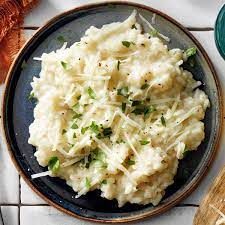

Risotto
Images of the Finished Dish

Ingredients with Quantities
- Arborio rice: 1 cup
- Chicken or vegetable broth: 4 cups
- White wine: 1/2 cup
- Onion: 1, finely chopped
Cooking Instructions
- In a pan, sauté chopped onions in olive oil until translucent.
- Add Arborio rice and cook until lightly toasted.
- Pour in white wine and stir until absorbed.
- Gradually add chicken or vegetable broth, stirring continuously until rice is cooked.